红队基础设施建设与改造（一）——Nmap解析与改造
本文所述的一切技术仅供网络安全研究学习之用，请勿用于任何的违法用途，否则由此所产生的一切后果自负！
所谓工欲善其事必先利其器，渗透过程同样如此，虽然大部分人的目标并不是想当一个脚本小子，甚至身边有不少朋友“不屑”用别人的工具非要自己写。然后就是各种抱怨：
“我X，扫描器又挂了！”“这个注入为什么我这个工具跑不出来”“怎么TM又超时了”“日，我IP又被ban了”这时候就开始真香了，自己写的全丢了，简历开头阿D明小子样样精通，实际项目里上来就是nmap，sqlmap一把梭，上了shell就是菜刀蚁剑直接连。
但是实际渗透过程当中，在针对大型目标的测试中可能并不一定好使，目标系统部署着IPS，IDS直接就可以识别常规扫描器，攻击工具的连接。
今天的第一篇基础设施的改造，就是我们非常常见的Nmap，nmap是一款优秀的端口扫描工具，同时内部集成了非常多的NSE脚本，在全球开源贡献者和安全人员的努力下集成的脚本越来越多，可以实现的特定设备扫描方式也越来越多，支持的漏洞种类也越来越全面，甚至有的漏洞可以实现端口扫描->服务探测->漏洞验证->漏洞利用->提权一条龙的操作，是一款非常优秀的工具。在官方wiki中的解释如下：
Nmap (Network Mapper) is a free and open-source network scanner created by Gordon Lyon (also known by his pseudonym Fyodor Vaskovich).[3] Nmap is used to discover hosts and services on a computer network by sending packets and analyzing the responses.
Nmap provides a number of features for probing computer networks, including host discovery and service and operating system detection. These features are extensible by scripts that provide more advanced service detection,[4] vulnerability detection,[4] and other features. Nmap can adapt to network conditions including latency and congestion during a scan.
Nmap started as a Linux utility[5] and was ported to other systems including Windows, macOS, and BSD.[6] It is most popular on Linux, followed by Windows.[7]
毕竟树大招风，现在越来越多的流量审计，IDS等设备都已经将Nmap的流量特征列入了重点监测对象。因此对流量的改造问题亟待解决，其中互联网上就有一份公开的流量特征检测规则样例，地址为：https://doc.emergingthreats.net/
本文主要针对nmap的常见扫描方式和数据包进行分析，进而从源码层面修改后重新编译达到降低针对特征扫描的发现概率。
我们先来看看具体的流量特征，我们的测试环境如下
扫描机：192.168.233.1 Windows10 Nmap7.60（今天写文章的时候发现7.9都发布了，别问为什么版本这么老，只是懒得更新）
目标机：192.168.233.129 Kali Linux2020.4 Wireshark
首先使用最简单的-p命令进行端口扫描，默认为全连接扫描，此时相当于带上了-sT参数
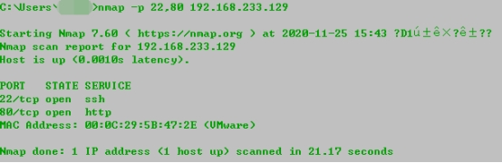
然后在目标机上进行流量截取，流量信息如下图所示：
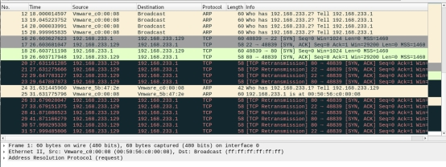
可以很明显的看到扫描的流量包，先来追踪一下扫描22端口的流量包，可以看到首先进行了ARP广播确认目标是否存活，在收到回包后开始发送探测数据包，第一个发过来包的源地址，目的端口以及包类型，是通过SYN/FIN的形式进行扫描
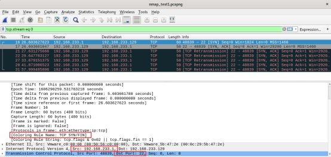
回包中我们可以看到目的地址，即扫描机的地址，对回包的判断端口是否开启只检查标志位。
而这时，如果我们扫一个没有开放的端口，例如3389，对应地可以看到回包为RST
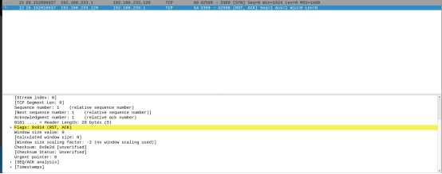
此时说明被过滤或端口关闭。这是基本的端口扫描原理，由于该种方式扫描会建立完整的TCP三次握手流程，容易在目标服务器上留下大量记录，因此在平时的扫描过程中通常不使用该方法。
实战中最常用的扫描方式为SYN扫描，发送一个SYN报文， 就像您真的要打开一个连接，然后等待响应。 SYN/ACK表示端口在监听 (开放)，而 RST (复位)表示没有监听者。如果数次重发后仍没响应， 该端口就被标记为被过滤。如果收到ICMP不可到达错误 (类型3，代码1，2，3，9，10，或者13)，该端口也被标记为被过滤。
此时易暴露的关键数据为Win字段，该字段用于指定TCP窗口大小，在SYN扫描时固定值为1024，定位到的源码位于tcpip.cc的665行如下图所示，还有一句很灵性的注释Who cares
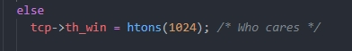
这时候改个值就行了，我改成了3306
再来看看nmap 常用的-sV参数判断服务时的发包情况
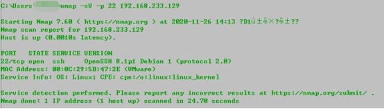
可以看到在加入了-sV参数后出现了很多其他的包
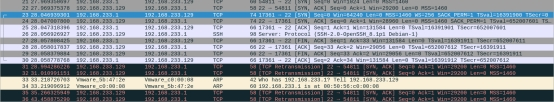
其中就有返回的SSH版本信息
追踪数据流后发现多了几个参数
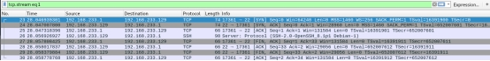
seq:包中第一个字节的序号
ACK：希望下次收到的seq序号
Tsval：字段
Tsecr：回显应答字段，用于回显接收到的Tsval字段
通过这几个参数，目标服务器在接受到来自nmap的探测包后会返回一些内容，例如此处的SSH版本号，我们可以再来看看通过Python2启动的HTTP服务，可以看到nmap成功判断了目标Python版本信息
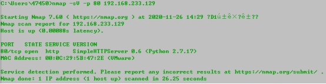
而在我们Python起的服务端上也看到了nmap 的请求方式：
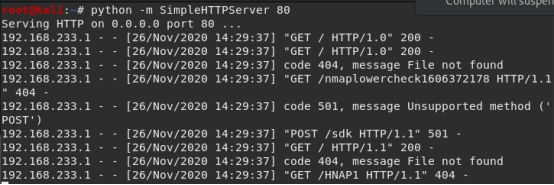
GET请求根目录，/nmaplowercheck1606372178，/HNAP1，以及POST请求/sdk目录，对应的数据包之多，一页放不下。
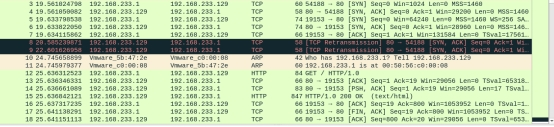
服务扫描的相关代码可以在nmap的源码部分的servicescan中找到，此处不做具体分析（主要是没找到特征较为明显的字符串），感兴趣的同学可以自行研究。
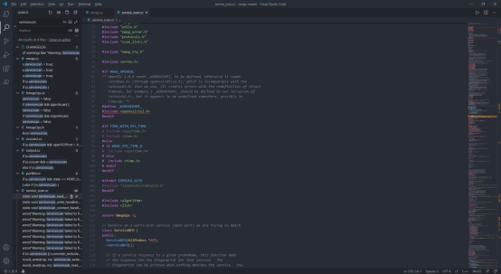
还有一大功能就是nmap的操作系统探测，我们直接使用-O参数就能实现操作系统探测，可以看到探测结果如下图所示：
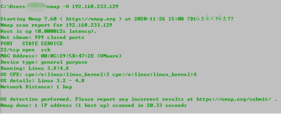
数据包非常多，20秒的时间就有了两千多个，因为我们在没有指定端口的情况下nmap悄悄地扫了很多端口
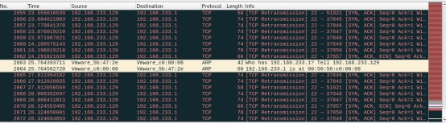
如果指定端口再看就少了很多：
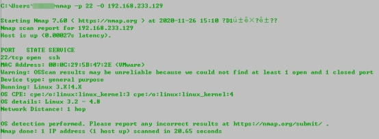
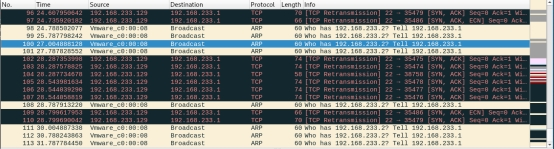
我们定位到关键数据包，即下图中追踪的UDP流，可以看到一串C填充的字符
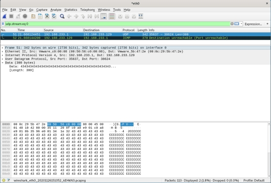
定位到源代码中，可以看到在osscan2.cc中在发包探测时用字符C来填充了ICMP数据包，为了避免某些规则检测，我们就可以考虑替换字符

而在上面一行中，可以看到注释中带有随机生成字符的部分
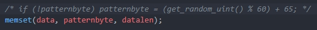
那就直接修改，将patternbyte改为随机生成即可，不会因为过于明显的特征而被防火墙等拦截
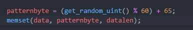
其他几种常见的扫描方法我也没看到啥明显特征…
经过进一步的资料查询和收集，发现在NSE脚本中可能也有大量的nmap关键字，例如nmap，nm@p，nm，nm2等，在实际使用时可以根据需要进行替换
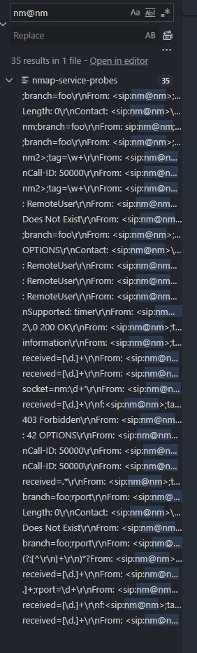
修改完成后即可进行编译，编译指令官方文档已经给出了，在ubuntu下进行编译
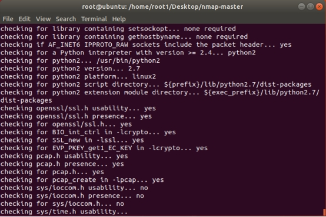
确认配置完成后有个炫酷的字符画
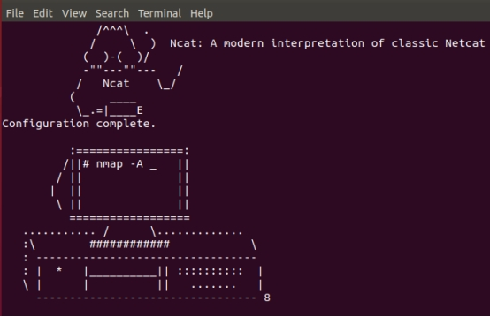
接下来开始make和make install，完成后可以看到我们的nmap已经变成7.91版本了
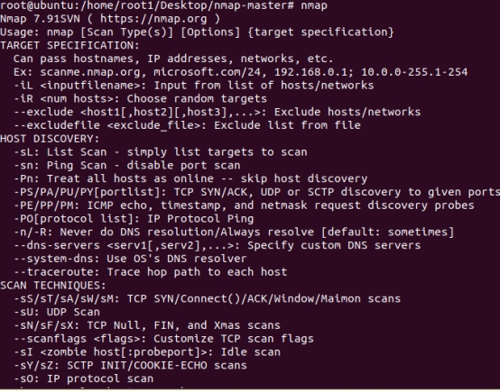
针对刚刚修改的点再来进行一波扫描，可以看到带上-O参数时已经变成了F填充
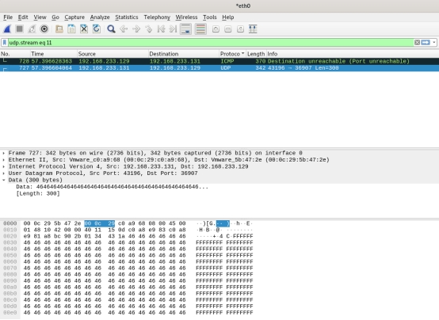
我们在进行SYN扫描时的Win值也变成了3306
同样此处也可以写一个函数对Win值进行随机化，能够规避部分具有进阶检测功能的安全防护设备